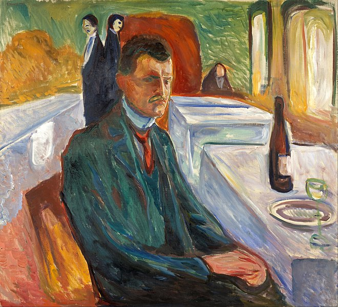
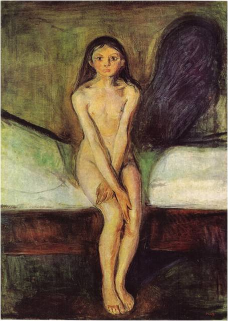
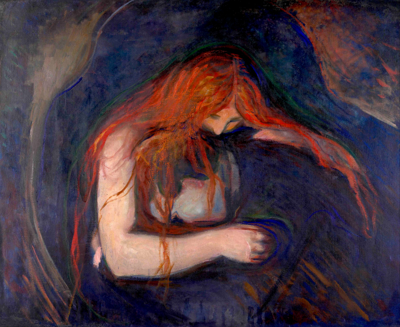

Edvard Munch fue un pintor y grabador noruego. Sus evocativas obras sobre la angustia influyeron profundamente en el expresionismo alemán de comienzos del siglo XX. Sus obras han sido consideradas
El pintor decía de sí mismo que, del mismo modo que Leonardo da Vinci había estudiado la anatomía humana y diseccionado cuerpos, él intentaba diseccionar almas. Por ello, los temas más frecuentes en sus obras fueron los relacionados con los sentimientos y las tragedias humanas, como la soledad (Melancolía), la angustia (El grito), la muerte (Muerte de un bohemio) y el erotismo (Amantes, El beso). Se le considera precursor del expresionismo, por la fuerte expresividad de los rostros y las actitudes de sus figuras, además del mejor pintor noruego de todos los tiempos.
El Grito

El grito es el título de cuatro cuadros del noruego Edvard Munch. La versión más famosa se encuentra en la Galería Nacional de Noruega y fue completada en 1893. Otras dos versiones del cuadro se encuentran en el Museo Munch, también en Oslo, mientras que la cuarta versión pertenece a una colección particular.
Ansiedad

Ansiedad es un óleo sobre lienzo pintado por el artista expresionista Edvard Munch en 1894. Está actualmente en el Museo Munch de Oslo, Noruega. Se considera que Ansiedad está estrechamente relacionada con la más famosa, El grito. El paisaje de fondo es el mismo en ambas, el fiordo de Oslo, visto desde Ekeberg.
Autorretrato con una botella de vino

El “Autorretrato con una botella de vino” no es una representación de la apariencia física del pintor, Edvard Munch. Se trata, más bien, de una expresión psicológica de sus dilemas internos. Como tal, podemos llamar a esto un retrato de la psique apenada y atormentada del pintor.
Por lo tanto, la imagen no se puede explicar como una fotografía, por las imágenes que transmite. Sólo puede ser entendido por la definición clara de lo que representa. Sentimientos como el miedo, la soledad, la desesperanza, la incertidumbre, y conceptos como la fobia, el aislamiento y la muerte son simbolizados por la técnica única del artista y los valores simbólicos de los pocos objetos discernibles en su pintura.
Pubertad

Pubertad es una pintura de 1894–95 de Edvard Munch, pintor noruego destacado en el arte expresionista. Pubertad también fue reproducida en litografía y aguafuerte por Munch.
Amor y dolor

Amor y Dolor es una pintura de Edvard Munch, también a menudo denominada Vampiro, aunque no por Munch.
La pintura muestra una mujer con largos cabellos rojos besando a un hombre en el cuello, mientras la pareja se abraza.A pesar de que muchos han visto en ello a "un hombre encerrado en el abrazo torturado de un vampiro – el lacio cabello rojo cayendo sobre la suave piel desnuda" Munch siempre reclamó que no mostraba nada más que "una mujer besando a un hombre en el cuello".